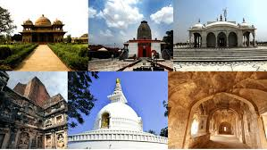
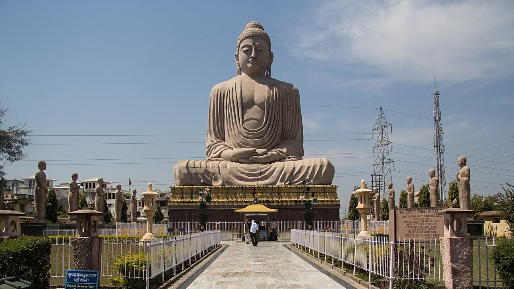

Bihar is a state in eastern India. It is the twelfth-largest Indian state, with an area of 94,163 km2 (36,357 sq mi). The third-largest state by population, it is contiguous with Uttar Pradesh to its west, Nepal to the north, the northern part of West Bengal to the east, with Jharkhand to the south. The Bihar plain is split by the river Ganges, which flows from west to east. Three main regions converge in the state: Magadh, Mithila, and Bhojpur. Bihar is the fourth-largest producer of vegetables and the eighth-largest producer of fruits in India. Bihar has high agricultural production making it one of the strongest sectors of the state. About 80 percent of the state's population is employed in agriculture, which is higher as compared to India's average.The main agricultural products produced in Bihar are litchi, guava, mango, pineapple, brinjal, lady's finger, cauliflower, cabbage, rice, wheat and sugarcane, and sunflower. Though good soil and favourable climatic conditions such as good rainfall favour agriculture, it has to encounter flood threat as well, which may drain off the fertile soil, if not conserved properly.The state (mostly southern parts) faces droughts almost every year affecting production of crops such as paddy
here are several traditional styles of painting practiced in Bihar. One is Mithila painting, a style of Indian painting used in the Mithila region of Bihar. Traditionally, the painting was one of the skills that was passed down from generation to generation in the families of the Mithila region, mainly by women. Painting was usually done on walls during festivals, religious events, and other milestones of the life cycle, like birth, Upanayanam (the sacred thread ceremony), and marriage. Hindu Goddess Sita, the consort of Lord Rama is believed to be born in Sitamarhi district in the Mithila region of modern-day Bihar.[136][137] Gautama Buddha attained Enlightenment at Bodh Gaya, a town located in the modern day district of Gaya in Bihar. Vasupujya, the 12th Jain Tirthankara was born in Champapuri, Bhagalpur. Vardhamana Mahavira, the 24th and the last Tirthankara of Jainism, was born in Vaishali around the 6th century BC